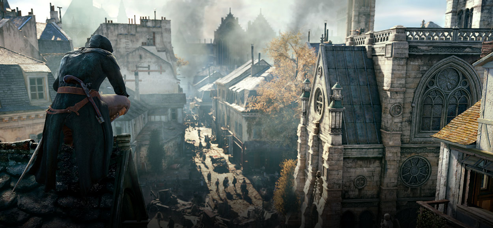

Assassin's Creed Unity is a historical action-adventure video game developed by Ubisoft Montreal and published by Ubisoft. It was released in November 2014 for Microsoft Windows, PlayStation 4 and Xbox One. The game is the seventh major installment in the Assassin's Creed series, and the successor to 2013's Assassin's Creed IV: Black Flag with ties to 2014's Assassin's Creed Rogue. Set within Paris during the French Revolution, the single-player story follows Arno Dorian in his efforts to expose the true powers behind the Revolution. The game retains the series' third-person open world exploration as well as introducing a revamped combat, parkour and stealth system. Assassin's Creed Unity introduces cooperative multiplayer to the Assassin's Creed series, letting up to four players engage in narrative-driven missions and explore the open-world map.

Arno Dorian
Arno Victor Dorian (1768) was a French-Austrian Assassin active during the time of the French Revolution.
An orphan who blamed himself for the death of his stepfather, Arno sought redemption by joining the French Brotherhood in 1789 and working to expose the true instigators of the Revolution, whilst also avenging him in the process.
In 2014, his genetic memories were studied by both Abstergo Entertainment and an unnamed member of the Initiates hacker group.
Born to Marie and Charles Dorian, Arno was raised in a noble household in Versailles. Due to his upbringing, he was well educated, having access to tutors and various books. At some point, Marie, having discovered the Assassin activities of her husband, fled and abandoned her family
In 1776, when Arno was eight, his father was murdered by Shay Cormac. He was adopted by François de la Serre, the Grand Master of the French Templars, out of respect for his enemy. He raised Arno alongside his own daughter, Élise, but kept his Templar involvement a secret from the young boy.
The French Revolution
Thirteen years later, Arno found himself in no end of trouble, having lost his father's watch in a card game and stole it back. When his angry pursuers chased him back to the de la Serre mansion, François attempted to mediate the situation, assigning Arno to assist his butler, Olivier, with whatever chores he would assign, which was cleaning the horses for François' carriage ride to meet Élise...For more visit the AC wiki
Unity Preview
Assassin’s Creed Unity is a game of impossible peaks and disappointing valleys. Its highs of movement, customization options, and just the city of Paris itself pierce the sky like the spire of Notre Dame. On a purely technical level, Unity is a marvel to walk through and admire. But at the same time, a lot of my journey through the French Revolution felt as cold and heartless as the darkest depths of the catacombs. I was never given a real reason to care about new Assassin Arno, or the events that transpired. Instead, I had to find my own fun throughout my 30 hours in Unity, which was generally easy to do in its large sandbox assassination scenarios. However, it’s a bit disappointing to see how few of the long-standing problems with the series have been solved by the upgrade to the new generation of gaming hardware.
The new consoles’ graphical power is put to good use in Ubisoft’s recreation of 18th-century Paris, which is absolutely stunning. As we’ve come to expect from an Assassin’s Creed game, it’s sprawling, gorgeous, and absolutely packed with sights to see and things to do. Climbing to the top of Notre Dame, synchronizing with one of the series’ iconic viewpoints, and watching the camera pull back and show you the breadth of your universe is staggering.
.jpg)